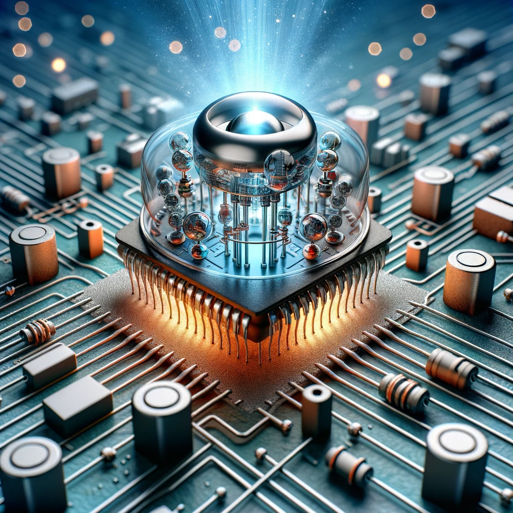
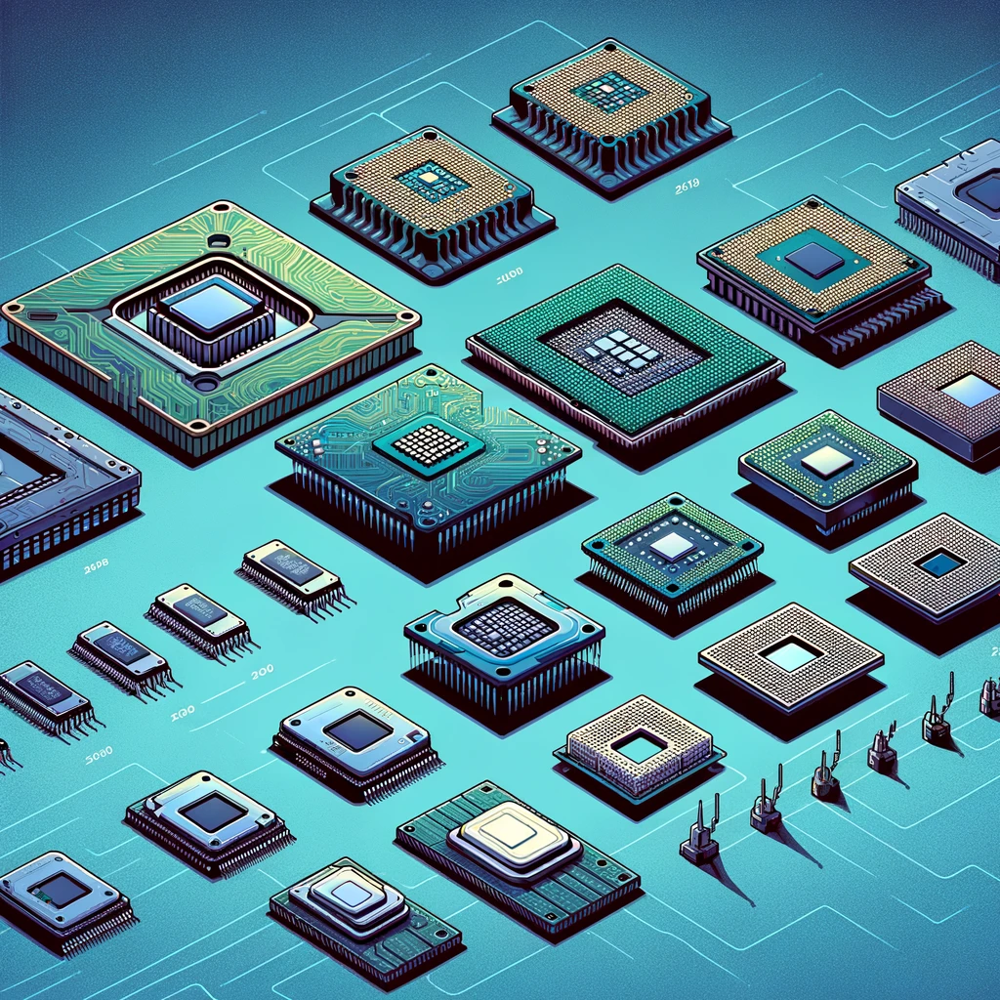

Historia de la Computación
La computación ha evolucionado significativamente desde sus inicios. A continuación, se presenta una breve
historia de
sus desarrollos más significativos:
Desarrollos Clave:
-
La Máquina Analítica de Babbage
Considerada una de las precursoras de la computadora moderna, diseñada por Charles
Babbage en el siglo XIX.
- La invención del transistor
Un avance crucial en la electrónica que permitió el desarrollo de
computadoras más pequeñas
y eficientes.

- La era de los microprocesadores
Con la llegada de los microprocesadores, las computadoras se hicieron más accesibles al
público general.

- El advenimiento de Internet
La creación de Internet revolucionó la forma en que las personas y las computadoras se
conectan y comparten información.

Figuras Importantes
En el desarrollo de la computación, han destacado numerosas figuras cuyas contribuciones han sido fundamentales.
Algunas
de ellas son:
- Charles Babbage:
Conocido como el 'padre de la computadora', por su trabajo en la Máquina Analítica.
- Ada Lovelace:
Considerada la primera programadora de computadoras, por su trabajo con Charles Babbage.
- Alan Turing:
Matemático y lógico, jugó un papel crucial en el desarrollo de la computación moderna y la inteligencia
artificial.
- John von Neumann:
Contribuyó significativamente a la arquitectura de computadoras y a numerosos campos de la física y
las matemáticas.
Impacto en la Sociedad
La computación no solo ha transformado la tecnología, sino también todos los aspectos de la vida moderna. Desde
la
medicina hasta la educación, el impacto de la computación es omnipresente y continúa modelando el futuro.
Página 2